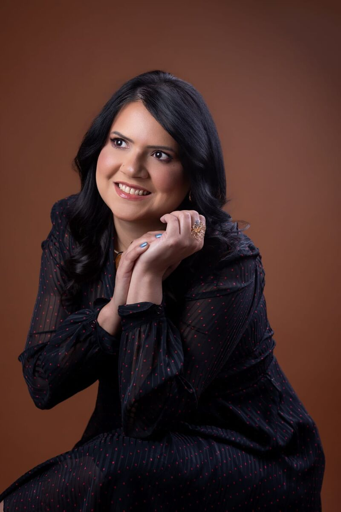
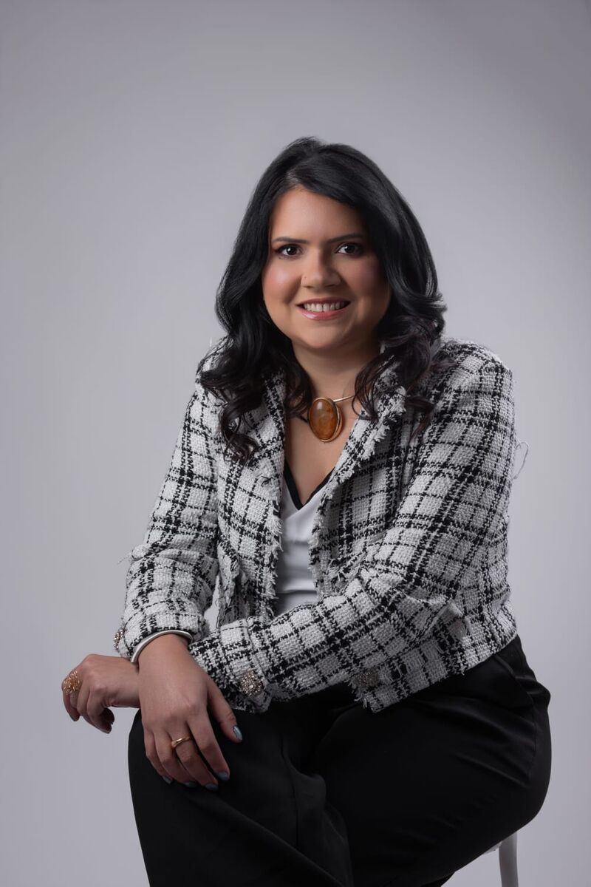
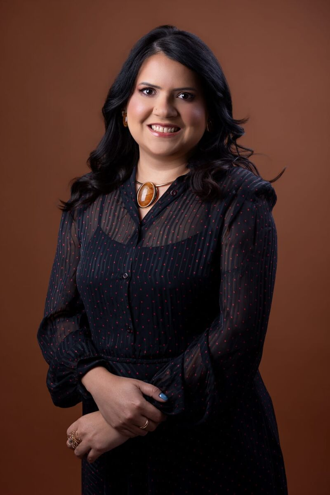
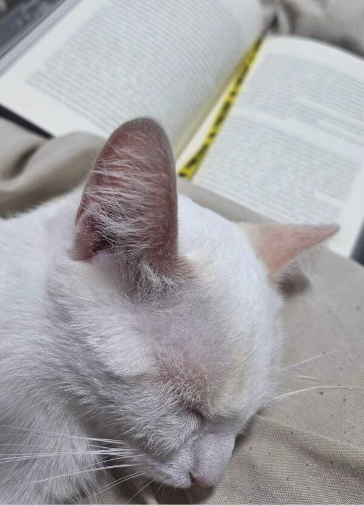
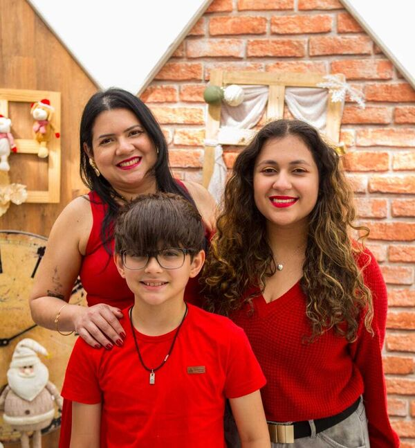
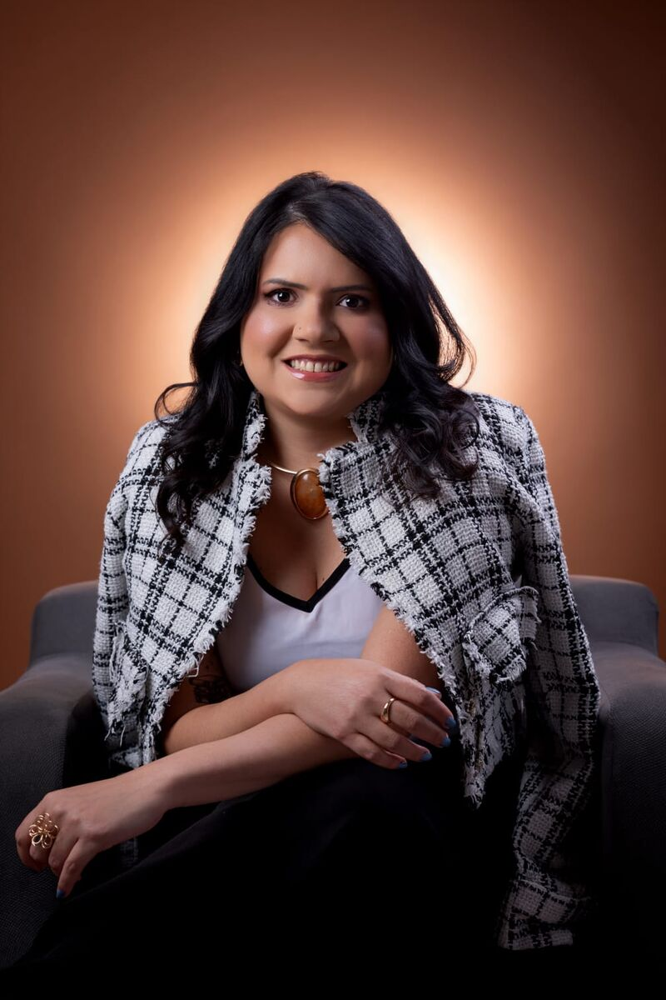

E
Escuta sem pressa
O relógio para. Você conta tudo, do seu jeito, sem julgamento. Nenhuma dúvida sobre um filho é pequena demais.
Consultas sem pressa, escuta de verdade e um acompanhamento próximo do desenvolvimento do seu filho, com foco em neurodesenvolvimento infantil.
Toda mãe merece sair da consulta mais tranquila do que entrou.
É isso que guia cada atendimento
Me formei na Universidade Federal do Amazonas há 15 anos e, desde então, trabalho com pediatria. Sou especialista em Pediatria pela Sociedade Brasileira de Pediatria e pela Associação Médica Brasileira.
Hoje me aprofundo no neurodesenvolvimento infantil: estou na Certificação Thiago Castro e na pós-graduação em Autismo e Transtornos do Neurodesenvolvimento.
Na minha consulta, o tempo é seu. Ouço a família até o fim, investigo cada detalhe e só considero o caso encerrado quando tudo faz sentido.
Cada criança é única. Por isso a consulta começa na escuta e só termina quando a família sai com clareza sobre o próximo passo.
O relógio para. Você conta tudo, do seu jeito, sem julgamento. Nenhuma dúvida sobre um filho é pequena demais.
“É normal, vai passar” não serve quando algo não parece normal. Cada detalhe é estudado até o quadro fazer sentido.
Toda criança se comunica, mesmo quando ainda não fala: no olhar, no sono, no jeito de brincar. Esses sinais guiam o cuidado.
Cada criança tem o seu ritmo. Mas alguns sinais indicam que vale conversar com a pediatra e avaliar o desenvolvimento com mais cuidado.
Pouco contato visual, ou não sorri e não demonstra alegria com as pessoas próximas.
Não troca sons, sorrisos ou expressões com você, numa espécie de "conversa".
Não responde quando é chamado pelo nome, não balbucia, não aponta e não dá tchau.
Ainda não fala nenhuma palavra.
Não forma frases de duas palavras com sentido, que não sejam só repetição.
Perda de fala, de balbucio ou de habilidades sociais que a criança já tinha.
Saber o que esperar deixa tudo mais leve, para você e para a criança. Assim funciona o primeiro encontro.
Você envia uma mensagem, conta brevemente o motivo da consulta e escolhe o melhor horário.
Tempo para ouvir a família, examinar a criança e observar como ela brinca e interage.
Você sai com explicações claras, os próximos passos definidos e um acompanhamento próximo.
Um acompanhamento contínuo, que olha para a saúde e também para o desenvolvimento da criança.

Crescimento, vacinas, alimentação e sono, acompanhados de perto em cada fase.
Marcos motores, fala, comportamento e interação, com atenção ao que foge do esperado.
Olhar atento aos sinais de TEA e outros transtornos do neurodesenvolvimento, com acompanhamento próximo da família.
Explicações claras e um plano possível para o dia a dia, para que ninguém saia da consulta com dúvida.



Um bom livro, um gato no colo e quem ela ama por perto.
Se a sua dúvida não estiver aqui, é só mandar uma mensagem. Nenhuma pergunta sobre um filho é pequena demais.
Pedir um horárioA pediatria acompanha a criança desde os primeiros dias de vida até a adolescência. Quanto antes começa o acompanhamento, mais cedo é possível perceber qualquer sinal que mereça atenção.
Não. Se você percebeu algum sinal que preocupa, como atraso na fala, pouco contato visual ou perda de habilidades, pode pedir um horário diretamente.
Não necessariamente. Os sinais indicam que a criança merece uma avaliação cuidadosa. O diagnóstico só pode ser feito por um profissional, depois de uma consulta completa.
A consulta começa ouvindo a família, sem pressa. Depois, a criança é examinada e observada enquanto brinca e interage. No final, você recebe explicações claras e os próximos passos.
Leve a caderneta de vacinação, exames e relatórios anteriores, relatórios da escola ou de terapeutas, se houver, e a sua lista de dúvidas.
Você conta a idade da criança, o motivo da consulta e o melhor período. A equipe da Dra. Joice chama você no WhatsApp para confirmar o dia e o horário.
Consultório em Tatuí, SP. Envie uma mensagem para saber os horários disponíveis e agendar a primeira consulta.
